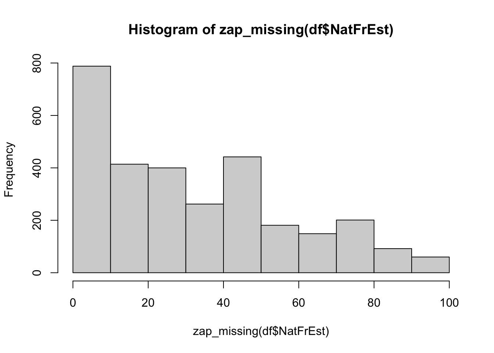

attributes(df$NatFrEst) $format.spss
[1] "F8.2"df %>% count(NatFrEst) %>% print(n=100)# A tibble: 55 × 2
NatFrEst n
<dbl> <int>
1 0 6
2 1 64
3 2 69
4 3 45
5 4 27
6 5 185
7 6 3
8 7 10
9 8 3
10 10 376
11 12 7
12 13 2
13 15 102
14 18 1
15 20 302
16 25 195
17 27 4
18 30 201
19 33 26
20 35 42
21 38 2
22 40 192
23 42 3
24 43 2
25 45 21
26 46 1
27 49 1
28 50 414
29 51 2
30 55 22
31 56 4
32 57 4
33 59 1
34 60 148
35 63 1
36 65 25
37 66 2
38 68 2
39 69 2
40 70 117
41 75 81
42 78 1
43 79 1
44 80 118
45 82 2
46 85 14
47 86 2
48 88 2
49 90 72
50 93 3
51 95 12
52 98 4
53 99 15
54 100 26
55 NA 235hist(zap_missing(df$NatFrEst))